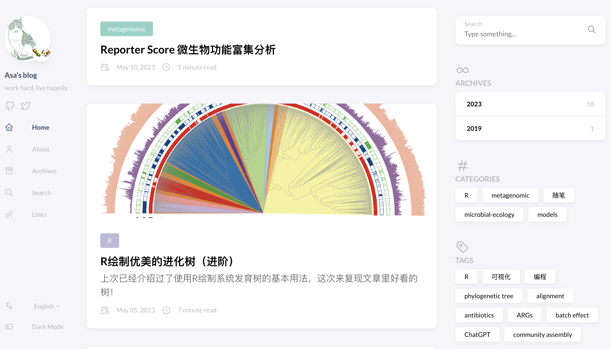

Asa’s website
Introduction
Here is a little test for building my website.
About myself:
Education
Undergraduate (2018~2022):
Biological Science, Zhejiang University, Colleage of Life Sciences
PhD student (2022~):
Bioinformatics, Zhejiang University, Life Sciences Institute
Focus on Metagenomics and microbial ecology: mechanisms shaping microbial diversity patterns, distribution and dynamics. Bioinformatics and systems biology: developing ecological network or other mathematical modeling approaches for microbial ecology.
Development
Some R packages:
MetaNet, you can find the MetaNet Tutorial here.
pcutils, which contains many useful tools or functions for statistics or visualization. I always use this package for productivity.
pctax, which contains some helpful functions for microbiome analysis.
ReporterScore, it is ReporterScore Functional Enrichment Method for Microbiome.
Web server under development:
- iphylo, which is developed in cooperation with Li Yueer.
Publications
- C. Peng, Q. Chen, S. Tan, X. Shen, C. Jiang, Generalized Reporter Score-based Enrichment Analysis for Omics Data. bioRxiv [Preprint] (2023). https://doi.org/10.1101/2023.10.13.562235.
- Q. Chen, M. Yuan, L. Jiang, X. Wei, Z. Liu, C. Peng, Z. Huang, D. Tang, X. Wu, J. Sun, C. Ye, Q. Liu, X. Zhu, P. Gao, L. Huang, M. Wang, M. Jiang, C. Jiang, Progressive community, biogeochemical and evolutionary remodeling of the soil microbiome underpins long-term desert ecosystem restoration. bioRxiv [Preprint] (2023). https://doi.org/10.1101/2023.09.26.559499.
- X. Zhu, T. Xu, C. Peng, S. Wu, Advances in MALDI Mass Spectrometry Imaging Single Cell and Tissues. Front. Chem. 9, 782432 (2022).
- H.-R. Wu, C. Peng, M. Chen, Rethinking the complexity and uncertainty of spatial networks applied to forest ecology. Sci Rep 12, 15917 (2022).
- L. Fan, C. Peng, X. Zhu, Y. Liang, T. Xu, P. Xu, S. Wu, Dihydrotanshinone I Enhances Cell Adhesion and Inhibits Cell Migration in Osteosarcoma U−2 OS Cells through CD44 and Chemokine Signaling. Molecules 27, 3714 (2022).
- M. Xia, Y. Liu, J. Liu, D. Chen, Y. Shi, Z. Bai, Y. Xiao, C. Peng, J. Si, P. Li, Y. Qiu, A new synonym of Polygonatum in China, based on morphological and molecular evidence. PK 175, 137–149 (2021).
Blog
I try to build my blog, where I will share something about biology and bioinformatics learning.

Offcial account
Contact information
Any question? Please contact bfzede@gmail.com or pengchen2001@zju.edu.cn